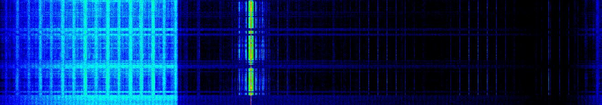

Welcome to Standing Waves¶

Warning
This is a new website currently under construction
Who am I?¶
An RF/Hardware engineer, and a home tinkerer. While I’m not a professional coder or a DSP engineer, I took an interest in SDR (Software Defined Radio) and radio signal processing as a hobby after discovering the very cheap RTL-SDR.
What will you find here?¶
This website is a collection of articles related to practical radio engineering, focused on SDR and simple experiments I made using Python. It’s not meant to provide mathematical rigour, but rather illustrate concepts in a pratical way.